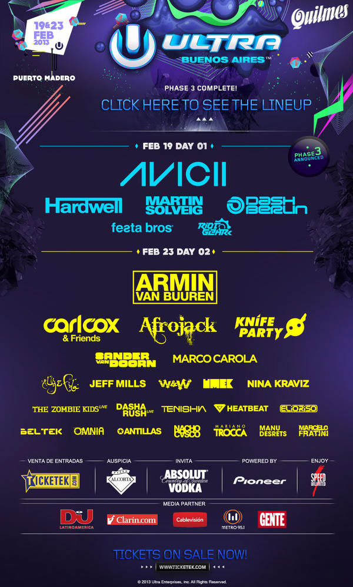
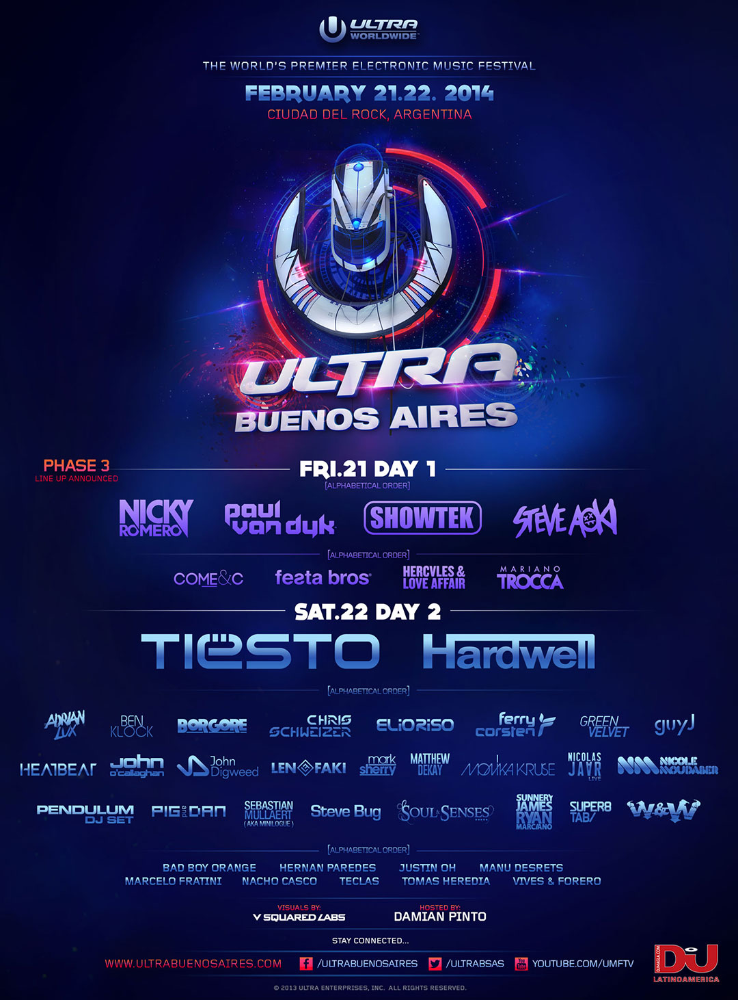
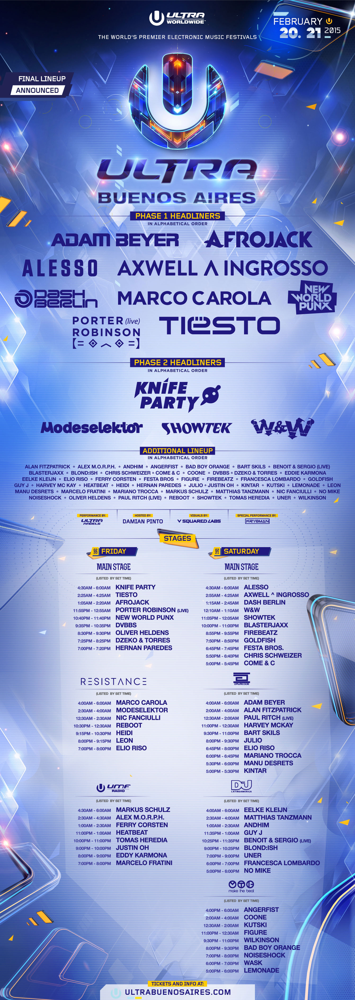

Ultimos Line Ups
Aquí encontrarás los últimos line ups de los festivales Ultra Buenos Aires. Cada año, el festival presenta una alineación impresionante de artistas internacionales y locales que hacen vibrar el escenario. A continuación, te mostramos algunos de los line ups más destacados de los últimos años.


